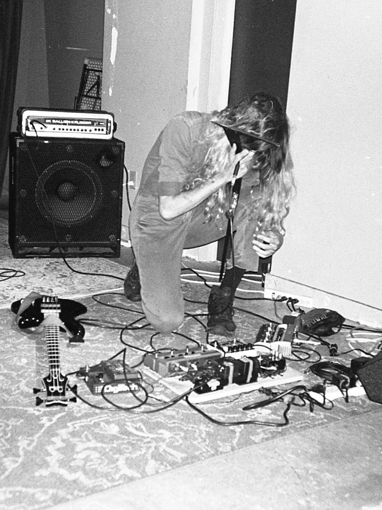

www.johnnyarlett.com
From their time as the longest standing bassist in the prolific no-wave/prog punk outfit Microwaves (hailed as the "unhinged shrieker" of the trio in light of their vocal extremities)
to later performing solo/releasing experimental recordings that touch upon vibrations conjured by the
likes of Nick Reinhart & Aaron Dilloway; Johnny Arlett continues to warp sensory expectations beyond their limits both in sight & sound.
An accomplished touring "musician", they are also a visual artist that is recognized for their massive body of work & abstract style within the realms of image & video.
Each work of theirs, whether it be personal or commissioned, is a perception bending experience that tends to leave the viewer immersed in a world much different from the one their nervous system might be used to.
Recent live performances have included the utilization of stringed instruments, percussive textures, looping rhythms, samples, synth & voice.